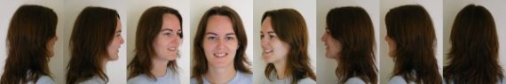
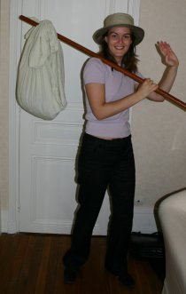

Peux-tu te présenter rapidement ?
J’ai 25 ans et je suis née à Rouen le 12 juillet 1979. J’ai vécu 3 ans à La Réunion avec mes parents juste après ma naissance, donc autant dire que mes souvenirs sont assez flous... Ma sœur est arrivée 2 ans et demi après moi et a eu le privilège d’ouvrir ses petits yeux pour la première fois sur le petit paradis qu’est l’île de la Réunion... Toute la petite famille est ensuite rentrée vivre en métropole, du côté de Rouen, pour retrouver les grands-parents.
Je suis rentrée dans la vie active depuis 2 ans maintenant après avoir fini mes études d’ingénieur en mathématique et informatique à l’INSA de Rouen. J’ai donc travaillé, en tant que développeuse, chez un éditeur de logiciel de finance à Paris, jusqu’à ce que, prise d’une envie de faire un break, j’aie tout lâché pour partir faire le tour du monde à deux... C’est ici que l’aventure commence !
Comment cette idée a-t-elle germé ?
Pour ne rien te cacher, c’est une idée de Michaël à la base... Au début, je l’ai un peu pris comme une blague... « Faire le tour du monde !! Ha ha ha !! En voilà une bonne idée ! ». Et puis, l’idée s’est installée et a commencé à mûrir doucement. Nous avons commencé à en parler entre nous pendant plusieurs mois, puis à nos familles... Et après maintes réflexions, nous nous sommes dit que si nous avions vraiment envie de le faire, c’était maintenant ou jamais ! Nous n’avions pas d’enfants, la ville de Paris ne nous convenait plus vraiment, nous avions envie de faire une pause dans notre travail... Bref, autant de bonnes raisons de partir maintenant !!
Pourquoi partir faire le tour du monde pendant un an ?
Tout d’abord, je suis amoureuse des voyages et des nouveaux paysages depuis longtemps déjà. Mes différents périples au Mexique, aux Maldives, dans les fjords de Norvège, à Miami, en Italie, en Sardaigne, au Kenya, en Allemagne et en Grèce n’ont fait qu’attiser cette envie de partir découvrir le monde de plus belle et de façon plus prolongée !
Je ne pars pas pour fuir mon quotidien ou pour échapper aux contraintes de ma vie de tous les jours, mais pour découvrir d’autres cultures, d’autres façons de vivre et aussi pour admirer les beautés de la Terre ! Bien sûr, cette décision n’a pas été facile à prendre... Entre le rêve et la réalité, il y a souvent un fossé à franchir, ce qui est loin d’être évident ! Partir signifie se retrouver en déséquilibre, quitter le sentiment de sécurité apporté par notre quotidien. Mais nous sommes motivés et prêts à tenter l’expérience de notre vie !
Je pars aussi pour apprendre à mieux me connaître personnellement, en dehors de tout contexte matériel, amical ou familial. J’espère tirer profit, pour ma vie future, des moments difficiles comme des moments merveilleux tout au long de ce périple. Partir à deux est aussi un moyen de vivre les émotions en couple et de revenir en ayant développé nos sentiments l’un pour l’autre et en ayant resserré nos liens grâce aux moments forts que nous aurons pu vivre à deux. Merci Michaël de m’offrir la possibilité de faire cette expérience à tes côtés.
Que pensent tes proches de ce voyage d’un an ?
Disons que les avis sont partagés... La plupart ont été assez surpris en apprenant la nouvelle. Ma famille s’inquiétait surtout de savoir ce que j’allais faire à mon retour. Etant donné que je n’ai pas l’expérience pour demander un congé sabbatique, j’ai été obligée de démissionner de mon travail. Bien sûr, j’ai beaucoup pensé au problème du retour. Est-ce que j’arriverais à retrouver facilement du travail avec une absence d’un an dans mon CV, est-ce vraiment le moment de partir vue la conjoncture actuelle du marché du travail qui n’est pas fameuse ? Mais après réflexion, je me suis dit que je me faisais confiance pour retrouver du travail à mon retour et que, de toute façon, cette expérience pourra me servir dans ma vie professionnelle à bien des niveaux ! Et puis, il y a un moment où il faut arrêter de se trouver des « bonnes excuses » et si nous avons vraiment envie de le faire, il faut foncer ! On ne vit qu’une fois, il faut en profiter !
D’autres personnes ont trouvé que c’était courageux de notre part de franchir le pas, d’oser aller jusqu’au bout de nos rêves... A ceux qui nous disent que nous avons de la chance, nous répondons que ça ne tient qu’à eux de faire pareil s’ils ont vraiment envie. On nous a souvent demandé si nous n’avions pas peur qu’il y ait des étincelles entre Michaël et moi pendant le trajet étant donné que nous serons 24h/24 ensemble. Je pense en effet qu’il y aura des moments plus difficiles que d’autres vu nos caractères respectifs bien trempés, mais je ne m’inquiète pas pour autant. Au contraire, je pense que ce voyage va nous permettre de nous rapprocher davantage !
Il est temps de se préparer à partir maintenant ! Je vous invite à nous suivre durant cette année de voyage par le biais de ce site et je vous dis à l’année prochaine !!!
Août 2004
Eve-Laure
